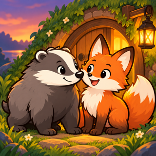

Homeward: Animal Puzzle
A cozy side-view puzzle. Guide the badger and the fox home across a sunny meadow: walk, jump and push crates into the water to make a way to every burrow.
- 30 levels, each checked by a solver
- Two animals with their own moves: the badger pushes crates, the fox jumps
- Undo, restart and hints, no timers
- Levels 1-5 free; one purchase opens all levels. No ads.
- Works offline
© 2026 MH Fusion Interactive